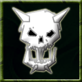

|
 |
Boss Monster A boss monster likes to stay at home in the lair and rarely leaves and is at a severe disadvantage when it does so. The eminent presence of a boss monster provides bonuses to any level it inhabits, and gives it the ability to sustain much more damage. Boss monsters are also especially good at fighting inside the lair, but as they become more powerful, their obesity causes them to move much more slowly. Command: N/A This ability is based on: Effects of the boss monster ability:
|
Battlecry | Boss Monster | Bureaucracy | Dungeonmaster | Grunt Mastery | Hoarding | Inspire | Intimidate | Mentor | Spirituality | Warmonger